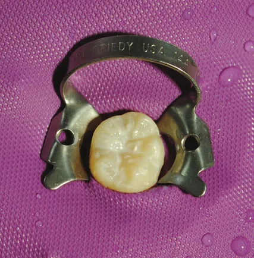

نسخه استخراجشده؛ ترجمه یا تأیید علمی انجام نشده است. وضعیت: captured
فلوراید روی سطوح صاف بهترین عملکرد را دارد، ولی در عمق شیارهای باریک اکلوزال کمترین اثر را میگذارد — شیار جایی است که نه مسواک میرسد نه بزاق خوب میشوید.
نتیجه اینکه بخش بزرگی از پوسیدگی دندانهای خلفی دائمی دقیقاً از همین شیارها شروع میشود.
کار سیلانت یک جمله است: شیار را از نظر فیزیکی میبندد و باکتری را از منبع غذایش جدا میکند.
اندیکاسیون بر پایهی ریسک است، نه سن یا عادت مطب. مولر اول دائمی تازهرویشیافته در کودک پرریسک، روشنترین کاندید است.
سیلانت رزینی انتخاب اول است، به شرطی که بتوانی ناحیه را خشک نگه داری. آلودگی با بزاق حین کار، شایعترین علت شکست و افتادن سیلانت است.
گلاسآینومر گزینهی موقت جایی است که ایزولاسیون ممکن نیست — مثلاً مولری که هنوز کامل نروییده و بخشی از تاجش زیر لثه است. ماندگاریاش کمتر است ولی در همان بازهی پرخطر پوشش میدهد و فلوراید هم آزاد میکند.
پایش را فراموش نکن: در هر ویزیت مرور، سالم بودن سیلانت را بررسی و در صورت افتادن ترمیم کن. سیلانتِ رهاشده همان محافظتی را ندارد که در روز اول داشت.

نوع سؤال: ساخت کلمه · 6 خانه
حروف منبع: ی · ی · ز · ی · ک · ف